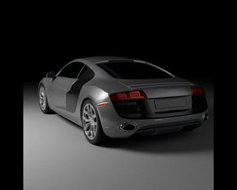
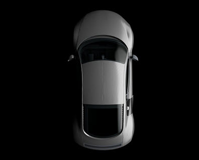

本教程介绍了一些基本照明设置，用于复制工作室灯光风格的汽车照片。成功进行汽车渲染的关键在于采用真实的照明。为了在工作室中正确地为汽车提供照明，需要进行大量工作和微调。实现正确的照明是创建有趣的镜面反射的关键，有助于加强汽车的美感。此处提供的提示旨在简化整个过程。场景简单地使用 quad_light 进行照明，形成大型工作室柔光箱照明。另外，还可以添加一个反光板，用于显示车身侧面的反射。
要下载汽车模型，请单击此处。
要下载场景文件，请单击此处（汽车工作室照明）。
导入到照明绑定场景中的奥迪 R8 汽车模型（链接位于页面顶部）。
|  |  |
使用 quad_light 中的 soft_edge，可以为灯光的边缘指定平滑衰减。这会在汽车涂料和挡风玻璃中创建一个更柔和的灯光镜面反射效果。
下载 zip 文件（上面的链接）后，您将看到该文件包含三个照明绑定场景。这些场景包含要用作汽车模型定位参考的车身、渲染摄影机和地板平面/圆柱型全景图。